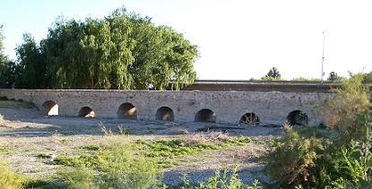

|
VILLARTA DE SAN JUAN
|
|
El origen de Villarta de San Juan es de la época prerromana, se han
encontrado vestigios iberos en sus proximidades. Villarta, se ha identificado con la mansio de Murum. De esta época destaca sobre el río Cigüela el puente de origen romano reformado en época de Felipe II. |
|
El puente estaba situado en la calzada que unía Consabu
con Laminium, permitiendo salvar la zona pantanosa del río Cigüela. Tiene 460 metros de largo y todos sus ojos, un total de
47 son desiguales y
asimétricos. Su anchura máxima es de 7 metros. El puente jugo un papel muy importante en la edad media y en la invasión francesa. A partir de 1920 con la construcción de la nueva carretera se ocultó bajo ella varios ojos del viejo puente en su salida norte, siendo progresivamente cubiertas de escombros tanto al norte como al sur. En la década de los 60 desaparecieron los pretiles del puente. Las obras de mantenimiento del puente han sido continuas desde su existencia, hasta nuestros días. |
 Ver PUENTES ROMANOS |
|
|
| CIUDADES HISPANIA |